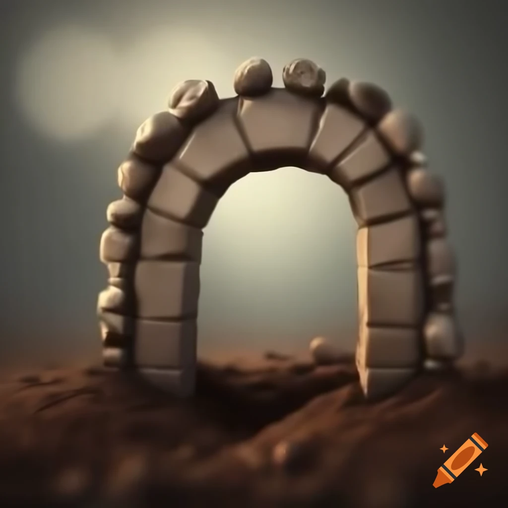
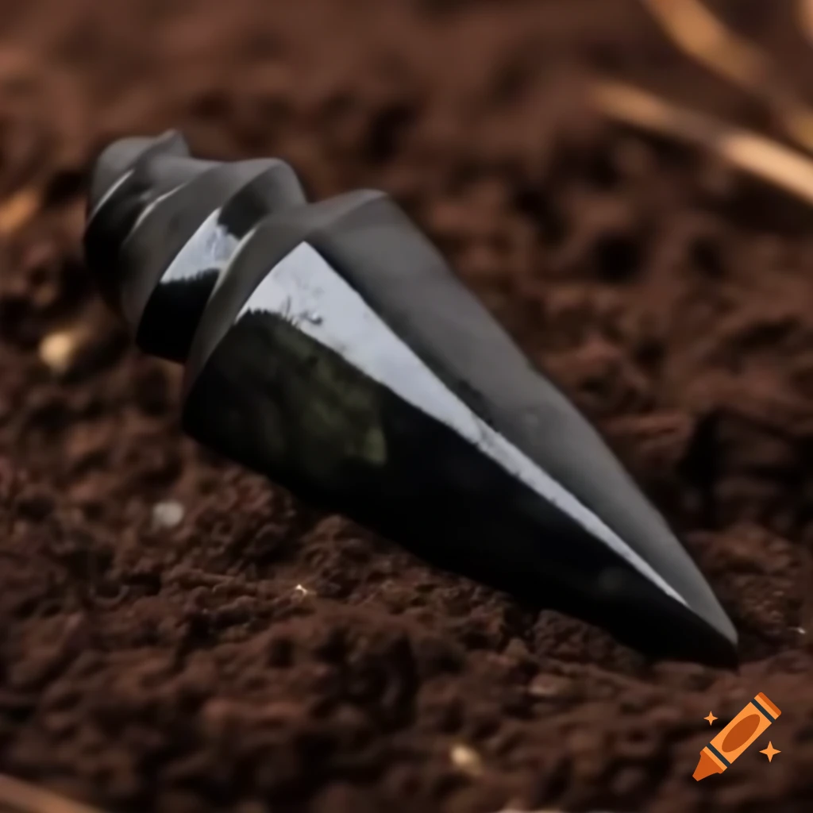
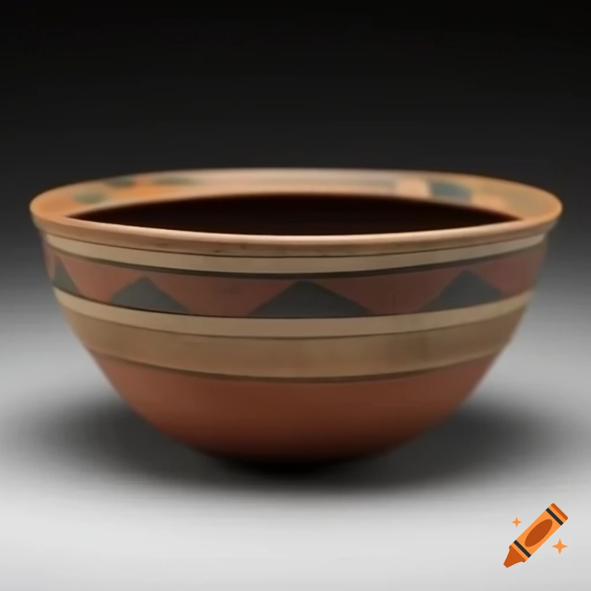
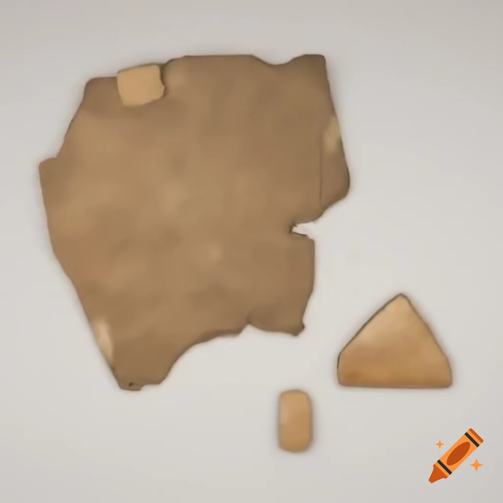
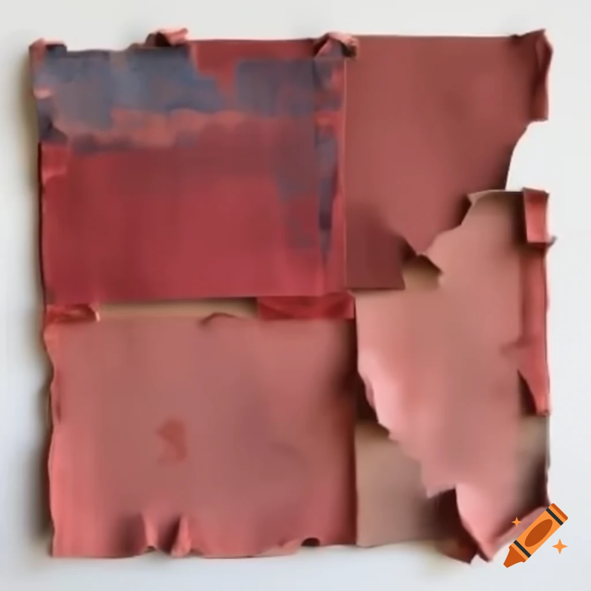
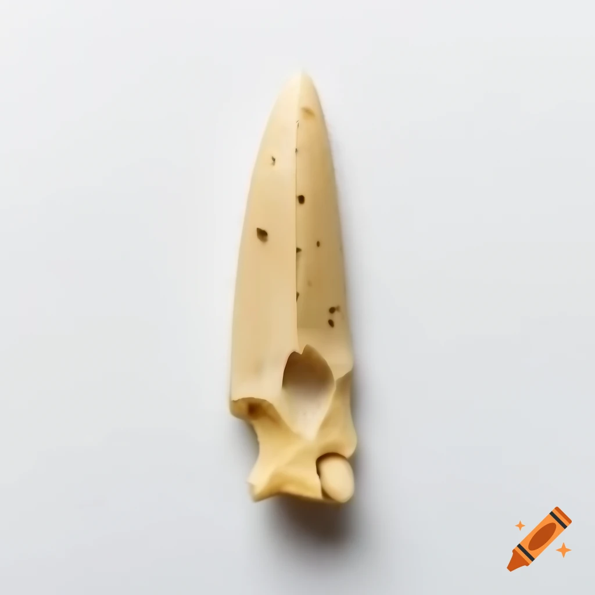

The content in this gallery was entirely created by AI under human direction. It was then curated, reviewed and edited by a human before being published.
Archaeology

Stone Arch Fragment
| Name: | Stone Arch Fragment |
| Material: | Sandstone with carved relief |
| Size/Weight/Shape: | Approx 62 cm tall, 48 cm wide, curved arch piece; irregular heavy block |
| Estimated Age: | Inferred mid-1st millennium CE from associated ceramics |
| Preservation State: | Partial, weathered edges, surface erosion |
| Location Found: | Grotto A-3 excavation trench, coordinates recorded in field book |
| Likely Purpose: | Architectural element, doorway or ceremonial arch |
| Evidence of Use: | Smooth worn step marks on inner curve, soot staining on lower face |
| Manufacture Clues: | Chisel tool marks, shallow drill pockmarks for ornament anchors |
| Found With: | Broken column base fragments and small painted tiles |
| Burial or Habitat Context: | Collapsed room fill in multi-phase building collapse |
| Symbolism: | Carved spiral motif possibly tied to local civic identity |
| Comparison: | Resembles arch fragments from Site B but larger and more ornate |
| Use and Function: | Framing entryways and marking important thresholds |

Obsidian Spearhead
| Name: | Obsidian Spearhead |
| Material: | Volcanic glass (obsidian) |
| Size/Weight/Shape: | 18 cm long, leaf-shaped, about 230 g |
| Estimated Age: | ~12,000 years (Late Paleolithic, inferred by organic context) |
| Preservation State: | Complete, edge intact, tip slightly chipped |
| Location Found: | Ash-layer midden, Grotto A-7, Vaktari Highlands (42.9981°N, 19.4912°E) |
| Likely Purpose: | Hunting weapon, possibly ritualized after use |
| Evidence of Use: | Microscopic traces of dried blood and feather fragments along haft |
| Manufacture Clues: | Precision flaking, symmetrical knapping, reverse edge burnishing |
| Found With: | Charred bird bones and red ochre lines |
| Burial or Habitat Context: | Buried tip-down in compact ash within shallow ritual pit |
| Symbolism: | Engraved spiral on base, possible wind or sky symbol |
| Comparison: | Nearly identical blade at Site B-2 without spiral engraving |
| Use and Function: | Spear/hafted projectile for hunting or ceremonial display |

Ceramic Pot Rim
| Name: | Ceramic Pot Rim with Geometric Bands |
| Material: | Fired clay with mineral paint |
| Size/Weight/Shape: | Rim diameter 22 cm, fragment weight 410 g, curved rim |
| Estimated Age: | Estimated 800–600 BCE based on stratigraphy |
| Preservation State: | Partial rim, soot-stained, hairline cracks |
| Location Found: | Household midden layer near Hearth C, Sector 2 |
| Likely Purpose: | Cooking or storage vessel |
| Evidence of Use: | Soot on exterior and carbonized residue on interior surface |
| Manufacture Clues: | Wheel-thrown with hand-applied painted bands and comb tool marks |
| Found With: | Animal bone fragments and small grindstones |
| Burial or Habitat Context: | Domestic midden deposited outside dwelling |
| Symbolism: | Painted triangles may mark potter workshop or household ownership |
| Comparison: | Matches pottery style from nearby Site D kilns |
| Use and Function: | Daily cooking and food storage |
Anthropology

Fragmented Cranium
| Name: | Fragmented Cranium with Burial Beads |
| Material: | Human bone, assorted glass and shell beads |
| Size/Weight/Shape: | Partial skull vault, several small bone fragments; fragile |
| Estimated Age: | Radiocarbon sample from rib collagen: ~650 CE (±40 years) |
| Preservation State: | Partial and stabilized, hairline fractures conserved |
| Location Found: | Secondary burial deposit, Tomb H, southern cemetery trench |
| Likely Purpose: | Human burial remains |
| Evidence of Use: | Polish on occipital region likely from burial wrappings |
| Manufacture Clues: | Not applicable; human bone shows cut marks consistent with excarnation practices |
| Found With: | Beads, textile fragments, and a small copper pin |
| Burial or Habitat Context: | Interred in shallow chamber with grave goods |
| Symbolism: | Bead arrangement suggests status or identity marker |
| Comparison: | Similar bead patterns found in Tombs H2 and H5 |
| Use and Function: | Human remains used for study and respectful display |

Woven Textile Fragment
| Name: | Woven Textile Fragment, Red and Indigo |
| Material: | Plant fiber warp and wool weft |
| Size/Weight/Shape: | Approx 18 x 12 cm, rectangular fragment, thin and flexible |
| Estimated Age: | Inferred late medieval period from dye analysis context |
| Preservation State: | Partial, faded dyes, some missing threads |
| Location Found: | Storage pit fill next to hut foundation, Sector 4 |
| Likely Purpose: | Clothing trim or small wrap |
| Evidence of Use: | Wear along edge and minor staining consistent with daily use |
| Manufacture Clues: | Plain weave with supplementary weft patterning and hand-spun yarn |
| Found With: | Bone needles and small loom weight fragment |
| Burial or Habitat Context: | Discarded in domestic waste pit |
| Symbolism: | Red stripe motif may indicate household or clan mark |
| Comparison: | Matches fragments from nearby rural households |
| Use and Function: | Clothing or decorative textile fragment |

Bone Awl
| Name: | Bone Awl with Hafting Marks |
| Material: | Long bone (mammal), polished |
| Size/Weight/Shape: | 12 cm long, tapered point, light weight |
| Estimated Age: | Context suggests Iron Age usage, estimated by layer pottery |
| Preservation State: | Complete, tip slightly blunted, surface polished |
| Location Found: | Workshop locus inside dwelling F, near tanning tools |
| Likely Purpose: | Sewing or perforating leather/textiles |
| Evidence of Use: | Polish wear on shaft and organic residue near hafting point |
| Manufacture Clues: | Cut marks from stone tool shaping and fine smoothing grooves |
| Found With: | Leather scraps, bone needles, and small scraper |
| Burial or Habitat Context: | Domestic workshop, on wooden workbench surface |
| Symbolism: | Plain functional object, no obvious symbolic marks |
| Comparison: | Similar to awls cataloged from rural settlements in same region |
| Use and Function: | Tool for crafts, leatherworking, and textile production |